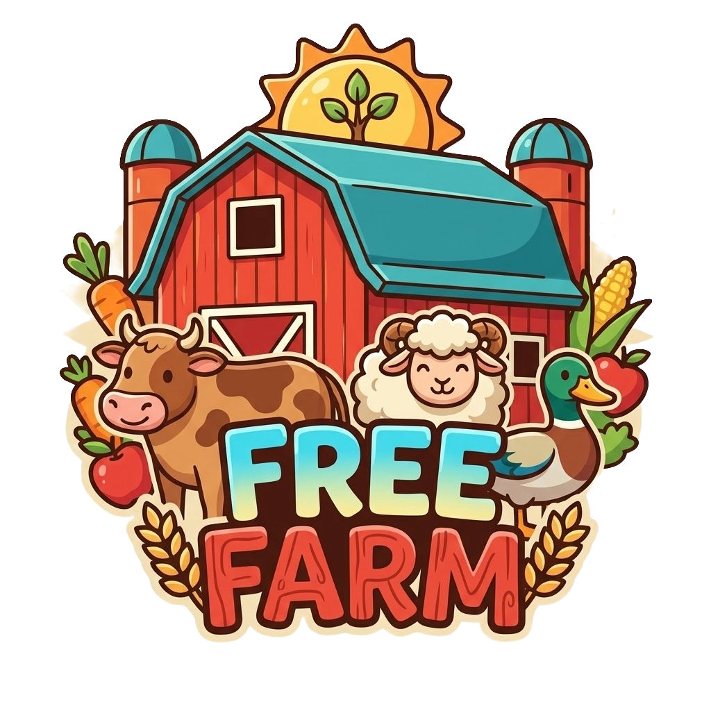

Botão esquerdo do mouse: Seleciona, fixa item, etc.
Botão central do mouse: Segure e arraste para mover a câmera
Partiu de um sentimento de nostalgia da minha infância. Jutando meu hábito de aprender novas linguagens e frameworks com a vontade que sempre tive de fazer algo parecido com o finado jogo "Mini Fazenda". Apesar de ainda estar muito cru e longe do que eu considero estar um jogo completo, Free Farm é o resultado de quase meio ano de desenvolvimento feito por uma pessoa só.
A primeira coisa que pensei ao iniciar esse projeto era em qual plataforma de código eu iria programar e os desafios de implementar o mínimo que eu tinha em mente. Pensei em pygame, Unity, godot e no fim utilizei uma que não fazia a menor ideia que existia: Phaser, uma biblioteca de criação de jogos feita em JavaScript. Uma biblioteca de simples entendimento e usabilidade e o principal, usando uma linguagem extramente acessível como o JS.
Apesar de meses de desenvolvimento o jogo ainda esta muito "verde", e bugs e erros podem
acontecer a
qualquer momento, princpalmente visualmente. O jogo é 100% offline por enquanto. Todo o
progresso é armazenado no localStorage e
salvo em arquivo .json.
Sempre salve antes de sair!
Caso queira doar, por vontade própria, alguma quantia para o desenvolvedor, sinta-se à vontade.
PIX: 10f2fa9f-e6df-4edc-8903-b067d5570554